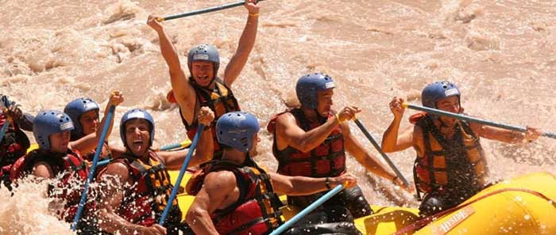
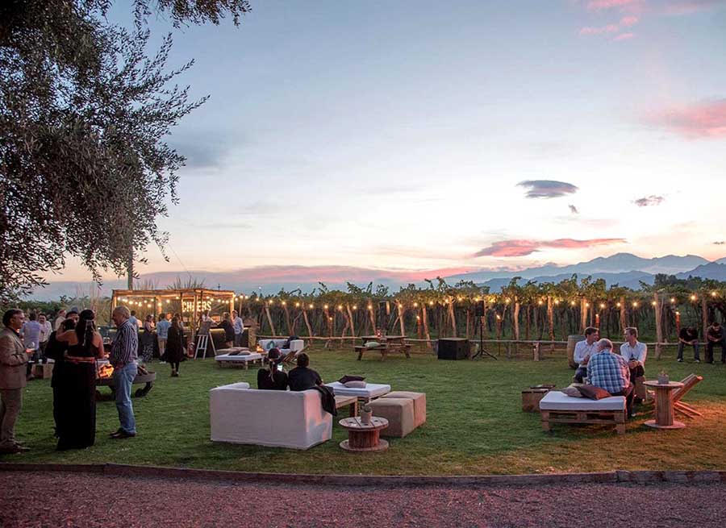

TURISMO JUMP MENDOZA
Si deseas aprovechar al maximo tu estadia en la tierra del sol y del buen vino, llegaste al lugar donde podras organizar cada dia deacuerdo a tus necesidades, podras con nuesta ayuda planear tus recorridos y conocer cada rincon de MENDOZA.
MENDOZA ES BELLA EN TODAS LAS ESTACIONES ANIMATE A CONOCERLA
VERANO
Con esta emocionante actividad de rafting descargaras adrenalina mientras tratas de sortear los rápidos del río Mendoza. ¡Una experiencia única que no podes perderte!
OTOÑO

Los maravillosos Portones del Parque son la entrada al espacio público más grande que tiene la provincia de Mendoza: el Parque General San Martín.Es una temporada muy demanda porque coincide con la vendimia, el momento en que los viñedos se tiñen de colores ocres previos a la caída de las hojas de las vides y el clima es muy agradable
INVIERNO

La nieve en los viñedos es una postal increíble. Una de las vistas que te dejan sin aliento es cuando venís por la ruta provincial 86 y en el ingreso al Valle de Uco en lo que se conoce como la bajada de Tupungato aparece frente a tus ojos toda la montaña vestida de un blanco impoluto. Eso ya es un adelanto de lo que vas a encontrar algunos kilómetros más adelante: la nieve en los viñedos del Valle de Uco en todo su esplendor.
PRIMAVERA
 Esta estación es maravillosa en Mendoza ya que se puede observar como la naturaleza se activa y regala energía. Los viñedos comienzan a crecer y se puede apreciar los primeros brotes, la floración y la aparición de los primeros racimos. Además es época de trabajo en las bodegas donde comienzan a prepararse para la próxima vendimia. El clima es el más agradable del año con días moderados y soleados que invitan a realizar actividades como cabalgatas, paseos por la montaña,almuerzos en los jardines de las bodegas y mucho más.